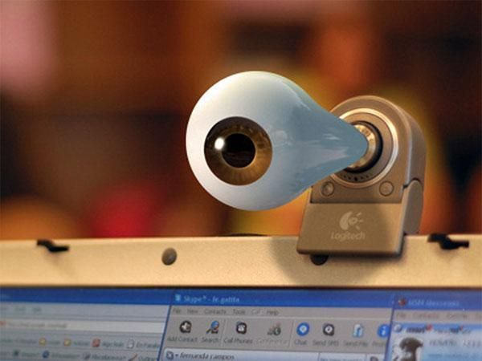

У каждого может быть свой мотив настроить комплексную анонимность
и безопасность своих устройств, и, вероятно, вы сочтете эту информацию
не очень полезной и пропустите. Ваше право, но делать это я не советую,
поскольку тут будут описываться важные причины задуматься о
своей сетевой безопасности и анонимности. Весьма вероятно, они
создадут вам дополнительную мотивацию следовать советам, изложенным в данной статье.
Вы хотите, чтобы каждое ваше сообщение анализировали и хранили?
Некоторое время назад на сайте госзакупок появилась информация с весьма интересным
заказом. Заказчиком выступил Следственный комитет Российской Федерации,
а сам заказ − интернет-система контроля за интернетом, а точнее система,
способная отслеживать все сообщения в СМИ, блогах и социальных сетях,
анализировать на предмет правонарушений и хранить не менее 1,5 лет.
Но и это не все: система должна еще уметь и прогнозировать противоправные действия.
Теперь, видимо, и Следственный Комитет будет следить за вами. Почему «теперь и»? Просто потому,
что подобная система уже давно активно используется тем же МВД, за вами уже давно следят, просто
с каждым годом глаз становится все больше, их решения становятся все эффективнее. В скором будущем контроль
за вами пророчат уже искусственному интеллекту.
Вы хотите стать жертвой кибервойны?
Как стало известно из разоблачений Эдварда Сноудена,
спецслужбы США следили более чем за миллионом жителей Бразилии. Такая
слежка и сбор информации − прямое вмешательство в личную жизнь граждан
− происходят по всему миру. Почему вы думаете, что они не следят и за
вами? Может, не стоит надеяться на чудо и начать думать о своей анонимности
и безопасности в сети? Это уже не паранойя, это единственно верная и здравая
реакция на сегодняшнюю работу спецслужб, в первую очередь спецслужб США.
Итак, США (и не только США) готовится к кибервойне. По имеющейся информации,
основными задачами в кибервойне будет вывод из строя основных инфраструктур
противника (электроснабжение, водоснабжение, банки, каналы связи, военные объекты).
Для этого ведется постоянный поиск уязвимостей и инструментов для атаки. Так вот,
инструменты − это мы, а вернее, наша техника. Потому, если вы, например, сотрудник ТЭЦ,
редактор популярного журнала, системный администратор интернет-провайдера, сотрудник
салона сотового оператора и имеете доступ к какой-либо информации или в скором времени
можете его получить, − вы объект для слежки и возможный инструмент для атаки системы
или получения нужных данных. К сожалению, это правда.
Вы хотите, чтобы ваши друзья и коллеги увидели самые интимные моменты вашей жизни?

Настоящее имя героини этой истории я назвать не могу, потому назовем ее Алена. Так вот Алена −
среднестатистическая девушка, проживающая в европейской части России. Молодая, красивая, учится в хорошем
ВУЗе, пользуется электронной почтой, социальными сетями, Skype и WhatsApp для общения с друзьями.
Устроилась на работу менеджером, работает в большом и дружном коллективе. Для отдыха и учебы Алена
использует ноутбук с установленным антивирусом и последними обновлениями системы. И однажды,
путешествуя по просторам интернета, Алена подцепила вредоносную программу на свой компьютер.
Она наивно полагала, что наличие популярного антивируса с обновленными вирусными базами защитит
ее от любых проблем, но, как мы уже писали, если бы это было так, вирусов и заражений просто бы не было.
Программа, попавшая на компьютер Алены, принадлежала к классу RAT. Эти программы предназначены для
удаленного управления компьютером, способны предоставлять злоумышленнику полный доступ ко всем данным,
включая камеру и микрофон. Обычная ситуация для однокомнатной квартиры, которая является спальней,
библиотекой, примерочной, когда ноутбук, не выключаясь, неустанно следит через камеру за хозяином.
Злоумышленники записали некоторые, особенно интересные для аудитории, моменты жизни молодой
девушки через веб-камеру ее ноутбука. Дальше скопировали всех друзей из социальной сети, скопировали
контакты из Skype и WhatsApp, а после прислали письмо с предложением ознакомиться с видео и списком
всех контактов, по которым будет разослано это видео, если она не оплатит им 3000 USD в биткоинах.
Надо ли говорить, каким шоком это было для молодой девушки и каким ударом по ней была бы рассылка
данного видео ее родственникам, друзьям, однокурсникам, коллегам? Она не спала всю ночь, неделю не
могла прийти в себя, но влезла в долги и собрала сумму. Ей повезло: злоумышленники сдержали слово,
хотя и создали ей немало финансовых проблем. Решение тут простое − заклеивать камеру, хотя оно и
не защитит от вредоносного ПО, но от слежки через веб-камеру −точно.